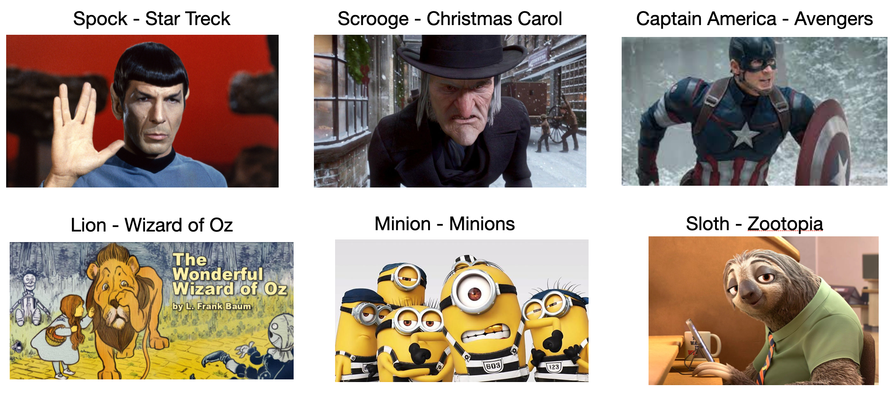

The study protocol has been approved by the ethics review board of Korea University under proposal KUIRB-2024-0069-01.
All of the studies were held on Korean.
Interaction Guidelines
Hello,
Thank you for taking the time to respond, even though you are busy.
A robot inside a glass fence will recognize and respond to the user's actions.
The actions recognized by the robot are as follows:
- Approaching
- Looking at the robot, not looking
- Raising one hand, raising both hands, not raising hands
- Waving, not waving
Based on these given factors, you can communicate with the robot non-verbally.
Please interact with robot for a minute and fillout the questions.
Phase 1 - Personality
In the survey phase 1, the objective of the study is to test if the users and identify the
intended persoanlity of the robot.
We have embedded a one random personality to the robot, and the participants
should focus on whether the you feel the robot
introverted or extroverted and agreeable and disagreeable.
Phase 2 - Personality
In the survey phase 2, the objective of the study is to test if the users and identify the
recognize which character the robot is trying to mimic
We have embedded a one random film character to the robot,
and is testing if the user can identify it.
To avoid the bias, the survey will first ask you to fillout the keywords,
and on the next page, you are asked to choose closest character that matches with the personality of the robot.
Please keep in mind that our robot does not mimic the character by apperance, but more on the persoanlity side.
Survey 1 User study Questionaires (Personality Based Persona)
S1: Score the extroversion of the robot
Introverted
Extroverted
S2: Score the agreeableness of the robot
Disagreeable
Agreeable
S3: What is your overall satisfaction of the interaction.
Not so
Very much so
Please feel free to write down the reasons for your above answers.
Character Based Persona Additional Guidelines
To help the participants better understand the objective of the study, we have provided
and example persona to the participants before starting the actual survey.
So, this is the one example of mimicing persona.
In this case, this robot is representing the "Peter Parker" character of "Spiderman 1".
Spiderman 1
We are not representing heorotic characteristic of the spiderman, but more on Peter himself. A nerdy but friendly neighbor (Showing the pictire from the movie )
As you see here, this robot reads a book if no one is engaing, representing a nerdy behavior,
But actively engage you by waving hands or bowing if i start to greet them, like a friendly neighbor.
Survey 2 User study Questionaires (Character Based Persona)
S4: List keywords that describe the robot's personality or behavior.
S5: Which of the following characters does the robot's behavior seem to be most similar to?

1. Spock (from StarTrek) Spock has a stoic personality and does not casually express his opinions or emotions.
2. Scrooge Scrooge is a greedy and grumpy old miser.
3. Captain America Captain America is a superhero character that embodies patriotism, often regarded as an exemplary figure due to his virtues.
4. Cowardly Liion The Lion is characterized as a coward.
5. Minions Minions are mischievous, always lively, spirited, and act bravely.
6. Sloth Priscilla the Sloth has a relaxed personality and slow at everything.
S6: Rate how well the robot imitates the personality of the character you selected in the previous quesiton.
Not so
Very much so
Please feel free to write down the reasons for your above answers.